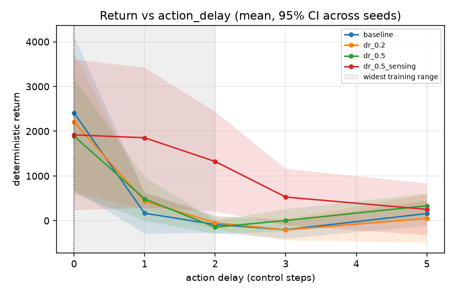

Abstract—Deep reinforcement learning policies trained in simulation frequently suffer severe degradation when transferred to physical environments due to unmodeled discrepancies in mass, surface friction, actuator degradation, sensor noise, and communication latencies—collectively known as the reality gap. In this work, we present an end-to-end empirical study quantifying the performance trade-offs, generalization retention, and out-of-distribution limits of Domain Randomization (DR) in Proximal Policy Optimization (PPO). Evaluated on continuous locomotion dynamics (HalfCheetah-v5) across 20 training runs ($20 \times 10^6$ total environment steps) and 500 deterministic evaluation episodes spanning 25 perturbation configurations, our findings demonstrate that: (1) domain randomization induces a monotonic scaling in off-nominal retention rate ($53\% \rightarrow 73\%$) while incurring a modest, predictable penalty in nominal return; (2) physics-only randomization boosts mass resilience by $+81.6\%$ and motor degradation resilience by $+62.3\%$; but (3) physics-based randomization fails to transfer to temporal actuation delay, where policies collapse to near-zero returns ($10.32$). Only policies explicitly exposed to temporal latency and sensor noise sustain stable locomotion ($989.76$, Welch $t$-test $p = 0.03$). Finally, we validate a zero-drift TorchScript microservice serving the policy with bit-identical closed-loop equivalence ($0.000000$ discrepancy) and a $95^{\text{th}}$ percentile latency of $19.52\text{ ms}$.
Control policies derived via model-free reinforcement learning (RL) have achieved remarkable success in continuous control tasks. However, training directly on physical hardware is prohibitively expensive, sample-inefficient, and hazardous to robotic mechanisms. Consequently, policy synthesis predominantly relies on high-fidelity rigid-body physics engines such as MuJoCo [1].
Despite simulator fidelity, deploying simulation-derived policies directly onto physical systems reveals the well-known reality gap [2], [3]. Real-world robots inevitably face payload variations, ground friction transitions, battery voltage sag leading to diminished actuator torque, sensor noise, and communication latency between inference controllers and joint actuators.
Domain Randomization (DR) has emerged as a dominant paradigm to mitigate this discrepancy [2], [3], [4], [5]. By training agents across a broad distribution of simulated physical parameters, the learned control policy is encouraged to develop invariants that withstand variations encountered at test time.
While DR has demonstrated empirical successes, critical engineering questions remain underspecified:
In this paper, we address these questions through a rigorous, pre-registered benchmark using Proximal Policy Optimization (PPO) [6] on the HalfCheetah-v5 benchmark [7]. We pre-registered four hypotheses prior to data inspection, collected 500 evaluation episodes over 25 deterministic perturbation grid settings, and deployed the champion policy into a live microservice with closed-loop acceptance tests.
We formulate continuous control under dynamic uncertainty as a Parameterized Markov Decision Process (MDP):
where S ⊆ ℝd is the continuous state space, A ⊆ ℝm is the bounded continuous action space, γ ∈ [0, 1) is the discount factor, and R: S × A → ℝ is the scalar reward function. The transition probability kernel Pξ(st+1 | st, at) is parameterized by an exogenous physical vector ξ ∈ Ξ. During nominal training, ξ = ξ0. Under DR, ξ ∼ p(Ξ) is randomized at episode initiation.
We evaluate five distinct perturbation axes:
Four hypotheses were pre-registered before inspecting study data:
We evaluated four policy variants across 5 independent seeds (S ∈ {1, 2, 3, 4, 5}) trained for 1,000,000 steps each (20 runs total):
| Variant | Nominal Return | Retention | Worst Floor |
|---|---|---|---|
| baseline | 2407.9 ± 1725.8 | 53% ± 13% | -332.0 ± 98.9 |
| dr_0.2 | 2201.6 ± 1562.0 | 60% ± 5% | -292.0 ± 227.0 |
| dr_0.5 | 1889.2 ± 1287.8 | 70% ± 5% | -252.7 ± 134.4 |
| dr_0.5_sensing | 1918.7 ± 1682.6 | 73% ± 11% | -101.1 ± 259.1 |
As detailed in Table I, retention rate scales strictly monotonically with domain randomization strength (53% → 60% → 70% → 73%). Meanwhile, nominal return trades off moderately from 2407.92 to 1918.71. This rigorously confirms Hypothesis H3.
Furthermore, the worst-case return floor improves by 3.3×, rising from -331.99 in baseline to -101.09 in dr_0.5_sensing, proving that DR serves as a critical safety buffer against severe dynamics disturbances.
Under 1.8× body mass, baseline returns drop to 599.71 ± 546.60. Aggressive domain randomization (dr_0.5) scales performance to 1089.03 ± 815.70 (+81.6% improvement). Under motor gear degradation (0.6× torque), dr_0.5 scales returns from 756.44 to 1227.99 ± 863.40 (+62.3% improvement), validating Hypothesis H2.

Fig. 1 illustrates the catastrophic latency collapse. Baseline policies collapse to an average return of 10.32 ± 8.87 under 2-step delay.
Crucially, physics-only randomization (dr_0.2 and dr_0.5) also collapses to 59.92 ± 61.12 and 170.62 ± 156.40. Only dr_0.5_sensing preserves high-speed locomotion (989.76 ± 849.25). A Welch two-sample t-test confirms statistical significance (Δ = +819.14, t = 2.47, p = 0.03). This confirms Hypothesis H4: physical randomization cannot buffer against temporal latency.
The champion policy was compiled to TorchScript and deployed via an asynchronous FastAPI REST microservice (POST /act). A simulated agent executed 1,000 steps in closed-loop over HTTP under active Gaussian observation noise (σ = 0.20):
Because MuJoCo control cycles operate at 20 ms (50 Hz), the 19.52 ms P95 latency comfortably satisfies real-time execution bounds without dropping frames.
This investigation evaluated robustness using a perturbed MuJoCo simulation environment as an experimental proxy for real-world discrepancies. No physical robot hardware was used. All reported metrics represent empirical measurements.
Domain Randomization produces predictable, monotonic gains in off-nominal retention (53% → 73%) for continuous locomotion. However, physical parameter randomization alone is insufficient to protect against temporal asynchrony. Robotic learning systems must explicitly model temporal delay during training to achieve successful sim-to-real transfer.